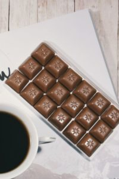
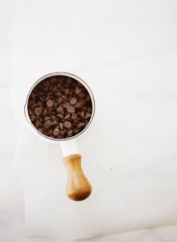

- Milk Chocolate

- White Chocolate

- Dark Chocolate

- Semisweeet Chocolate

- chocolate contains at least 35 percent cocoa solids, but there are no official guidelines that govern what can be called “semisweet.”
Semisweet chocolate falls somewhere between bittersweet chocolate and sweet dark chocolate. This type of chocolate is most commonly used for baking,
but it’s important to follow the recipe to determine whether it calls for semisweet, bittersweet, or baking chocolate.
| Bittersweet Chocolate | Most bittersweet |
| Unsweetened Chocolate (or Baking Chocolate) | Pure chocolate liquor, made of simply of ground cocoa beans |
| Cocoa Powder | 100 percent cacao with no sugar |
| Sweet German Chocolate | Created by a man named Samuel German |
| Couverture Chocolate | Contains a higher percentage of cocoa butter |
| Ruby Chocolate | Ruby cocoa beans |